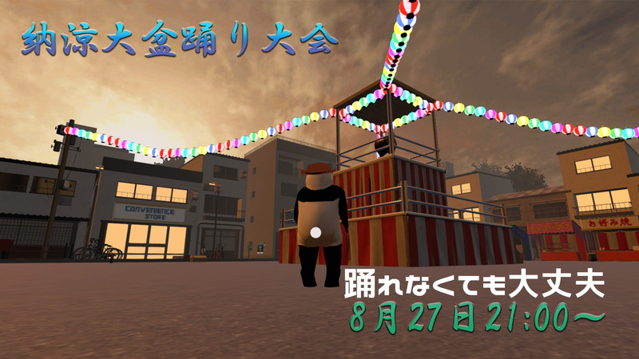

GAMEJAM開催
48時間以内にclusterのゲームワールドを作るイベント、Cluster GAMEJAMが8月13日から15日に開催されました。
参加賞として記念メダルが貰える上に、さらにはなんと多くの企業から、パソコンとVRゴーグルのセットや、アバターのセット、パーカーやZONeなどの、300個以上のの賞品が贈られます。
総参加人数は600人を超える、とても大きなイベントとなりました。
｢ホップ、ステップ、ジャンプ！｣というテーマで、皆さん思い思いのワールドを作り、腕を競い合いました。
期間中は開発室のワールドも設置され、そこに入りながら作業する人も。
結果発表は8月22日を予定。一体どんな趣向を凝らしたワールドが受賞するのか……！
受賞ワールドの紹介は、次号の記事で行います。お楽しみに！
また、次ページでは、よっしーさんによる参加レポートを掲載しています、あわせてご覧ください！(オリゴ糖)
納涼大盆踊り大会開催
2021/8/27金曜日の21時から盆踊り大会が開催される。
イベントをしようと考えた熊猫土竜さんは夏ということで盆踊りの会場を制作。
Twitterをみていると、イベントに向けてアイデアがあふれ出して加速している様子。楽しみなイベントです。
単なる盆踊り大会かなとおもいきや、DJの募集がされていたり、震災にちなんだ踊りが予定されていたり、オリジナル盆踊りが作成されている気配のあるこのイベント、主催者の熊猫土竜さんにコメントをもらってきました。
主催者熊猫土竜さん
「バーチャルだからこそアナログで伝統的なぬくもりを持ってきました！やぐらの周りをまわるだけでもOK。あなたが主役のイベントです。もちろんclusterならではの演出もあり、ゲストも多数出演！ 後悔はさせません、夏のおわりを一緒に楽しみましょう！」
後悔のないこのイベント、本誌の記者も参加し特に震災復興についての観点から大型記事を予定中！お楽しみに。
（so1_, 9001)

ゲームワールドの祭典！「ClusterGAMEJAM」参加レポート
今年もやってきた。いや、
"やってきてしまった"か。
cluster公式によるゲームワールドクリエイターのための祭典「ClusterGAMEJAM」が8月13日から15日にかけて開催された。本記事ではイベントの様子を、GAMEJAM初参加の筆者・よっしーの実体験を交えつつお伝えする。
まずGAMEJAMとは何か？
クリエイターが集まって、テーマに従って短時間でゲームを製作するイベントだ。
参加するだけで特製Tシャツやエナジードリンク｢ZONe｣がもらえたり、大賞に選ばれるとVR付きPCがもらえるという、"お祭り"である。
13日に開会式が行われた。MCの「インサイドちゃんMark1/Mark2」と、特別ゲスト「届木ウカ」の3人により賞品紹介やレギュレーション確認等が行われた。
どうやらワールド投稿できた人全員に記念メダルが配られるらしい。噛んでも交換できないので要注意だ。
さらに今回の参加者数は、開会式の時点で507人、330チームという過去最大級規模だ。
そして、ついに発表された今回のテーマは【ホップ･ステップ･ジャンプ】。
さあついに。進まない企画、詰まる製作、無限のデバッグを48時間で終わらせる熱狂イベントが、幕を開けた。
GAMEJAMは1人でもチームでも参加可能。マイペースな筆者は1人で参加した。だがゲーム製作経験はない。多少の不安を抱えながら始めた。
何度も"Unityワカラン"の壁にぶつかった。大変だった。
結果として筆者は、対人かつ個人戦のバトロワシューティングゲームを投稿した……
──もちろん未完成だ。
だが良い。新しいを学び、挑戦したというそのプロセスが貴いのだ。みんなWINNER。
手前味噌ながらフルスクラッチで0MBのゲームになった。
これでスマホユーザーも一瞬で参加できるであろう。
今後更新するつもりである｡
閉会式は15日に行われた。
MCの「とみね」「スワンマン」により発表された総エントリー数は638人と、48時間で過去最大級を更新した。
記者は初参加のGAMEJAMだったがかなり楽しめた。
「ワールド作るの難しそう」と考えている人はぜひ勇気を持って挑戦してみて欲しい。ネット上に公式ガイドの他、ユーザーによる有志作成のガイドも多数ある。ノーコードで作れるのでプログラミング知識も不要だ。
受賞作品発表会は22日21:00から始まる。誰が豪華賞品をゲットするか見ものだ。
(よっしー)
初心者への案内に！
日々増え続けているclusterユーザー。初心者の方が増え続ける中で、案内にぴったりなワールドが出来ました。
それが｢いちこん初心者ワールド/IchiKon Beginner's Guide V1.5｣(作:ichitaro/いちたろうさん)。
入ると、そこには綺麗で幻想的な空間が広がります。
広いワールドは移動方法を知るのにもってこいの機会。
みんなで一緒に、ワールドを歩き回りましょう！
そしてこのワールドと公式のチュートリアルワールドとの違う所、それは｢操作方法だけ｣の説明では無いところ！
ワールドで過ごす際のマナーや、動作の細かい解説、さらにはアバターの見つけ方まで、clusterで過ごしてゆくための知識が、一連の流れで学べます。
さらにこのワールドの最後にはいちたろうさん制作の様々なワールドへと続く建物が。
ワールドへの移動が簡単にできます。皆さんもぜひ、初心者さんを誘って、このワールドへ来てみてはいかがでしょうか？(オリゴ糖)
初心者案内経験レポート
clusterをやっていると、初心者に会ったり、clusterの外の友達をclusterに誘ったりという機会があることがあります。
この記事では、筆者が案内をした時の経験と、その時に気をつけた事を紹介します。
とあるワールドで話しかけた人が初心者ということで、左のワールドへ移動し、案内をすることに。
clusterの基本的な所を説明しつつ、ワールドを歩き回るという事、人と話すことの楽しさを重点において案内しました。
その際、ただワールドの説明文を回るだけではなく、積極的に話しかけるのを意識しました。
相手が積極的に話してくれる人だったのもあったので、そこは相手の雰囲気も見て話しましょう。
また、ボイスチャットを使う時は必ずイヤホンをする、などの本当に大事なことは、何回か説明すると良いかもしれません。
また、他のフレンドさんなどに出会った時に、一緒に案内してもらうのも一つの手です。
初心者の案内は、clusterの良さ、バーチャルの良さを理解してもらうのに、絶好の機会です。
初心者の人を見つけた時は、是非積極的に誘ってみましょう。
(オリゴ糖)
大筋肉祭開催！
大筋肉祭 ～概要～
大筋肉祭とは、筋肉質なアバターを使ってイベントに参加したり、実際にスクワットをしながら参加をしたり、筋肉を題材にしてトークをしたり
筋肉のためにフードフェスを催したりする、筋肉を愛でる
一大ユーザーイベントです。
終了済イベントピックアップ
8/19「筋肉リレー～筋アバターでつなぐ絆～」
8/20 MMステ(Muscle Music Station)#01 ～音の饗宴～
8/21「Muscle Lunch会」#大筋肉祭 で、みんなで楽しくランチしよっ♪
8/22 学術「教えて！ライオン先生！」～研究者登壇＆学術対談～
いずれも和気藹々とした内容かつ筋肉を愛し抜き、大盛況なイベントでした！
まだ間に合う！大筋肉祭！
「8/29」 DAY5告知
・マッスル起業家達が存在しない新規筋肉事業をプレゼン
マッチョ・ゲッツ・マネー 15：00～
スクワットするだけのイベント3DAYS 17：00～
・ぶち上がれ！キンギュラリティを越えて行け！
「MMステ(Muscle Music Station)#02～筋肉歌合戦～」 20：00～
劇団四頭筋「筋の名は。」+閉会式 22：30～
あなたとcluster #4
clusterで出会った人たちにひとことインタビューする連載企画。
Q1.clusterを始めたきっかけは？
Q2.普段clusterでどのように過ごしてる？
Q3.今後clusterでやってみたいことは？
の3つの質問をしていきます。
今回ご回答いただいたのは「ばくだん」さんと「Effect」さんのお二人。
【「ばくだん」さん】
A1.ネットフリックスで映画が見られるよという広告を見て
A2.基本イベントばっか出てます、参加する側ですね
A3.自分もモデル作って配布とかしてみたいですね

【「Effect」さん】
A1.やっぱりReality連携からですね
A2.「ひよこやぞ！」っていいながら人を追いかけまわしてます
A3.仲いい人と協力して音楽イベントを開きたい